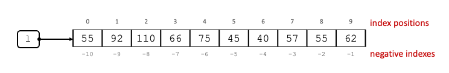
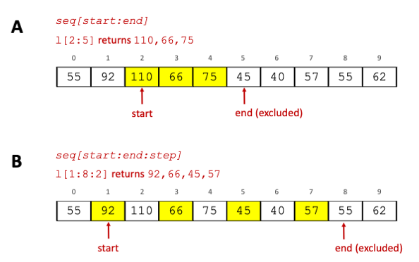

Data Structures#
So far we have dealt with single data items. But what if we have a large number of data items? Storing each item in a separate variable is not efficient and time-consuming. This is when we use data structures.
Programming concept
Data structures are structures in memory that store and organise data. Essentially it is a collection of data items.
The benefits of having multiple data items in a collection makes it easier to perform operations that need to be applied on each item in the collection. Data Structures are also very useful when reading data from files. This section introduces different data structures commonly used in Python.
Lists#
Lists are one of the built-in data structures in Python. Lists can contain data items of different data types, but as a good practice we normally create lists of the same data type. Lists are created as a comma-separated list of data items enclosed in square-brackets. Let us create our first list:
l = [55, 92, 110, 66, 75, 45, 40, 57, 55, 62]
The code above creates a variable l which references a list in memory that is 10 items long. Assigning data items to
a list is also known as list packing.
List index positions and slicing#
Each data item has a specified position known as index position. Index positions in Python start from 0. Representation of list l in memory and the index positions of its items. below shows an
example of the sequence of data items in list l together with their index positions.

Fig. 5 Representation of list l in memory and the index positions of its items.#
A list is a Sequence type in Python, and therefore, it can be sliced using the item access operator []. Slicing
means extracting items from a sequence. Assuming seq is a sequence, in this case of data items, to extract one item from a tuple, specify the index position of that item in []
as \(seq[index position]\) as in the example below.
#Extract item at index position 2
print("Item at l[2] is", l[2])
#Extract item at index position -2
print("Item at l[-2] is", l[-2])
Item at l[2] is 110
Item at l[-2] is 55
To extract more than one item from a sequence you can either:
\(seq[start:end]\) to extract items from a sequence from a start position up to an end position (excluding it).
\(seq[start:end:step]\) to extract every stepth item from the sequence starting from the start position to the end position (excluding it). Below are two examples, A and B, that show these two ways of slicing a tuple.

Fig. 6 List slicing.#
Below are code examples of other operations you can do with lists:
#Extract items from the beginning of the list to index position 2 (excluded).
print("l[:2] is", l[:2])
#Extract items from index position 5 to the end of the list.
print("l[5:] is", l[5:])
#print all items in a list
print("\nPrint all items in list l", l)
# List replication: replicate contents of a list by a specified number of times
l3 = l * 2
print("\nReplicating list l by 2:", l3)
# List unpacking - place data items of list in separate variables
print("\nList unpacking:")
l4 = ["Alexia", "Cardona", "Python"]
(name, surname, subject) = l4
print("Name is", name)
print("Surname is", surname)
print("Subject is", subject)
l[:2] is [55, 92]
l[5:] is [45, 40, 57, 55, 62]
Print all items in list l [55, 92, 110, 66, 75, 45, 40, 57, 55, 62]
Replicating list l by 2: [55, 92, 110, 66, 75, 45, 40, 57, 55, 62, 55, 92, 110, 66, 75, 45, 40, 57, 55, 62]
List unpacking:
Name is Alexia
Surname is Cardona
Subject is Python
Membership operators#
Membership operator are used to test for membership in Sequence types. For lists, the in membership operator
returns True if a data item in list l is equal to x, otherwise it returns False. The not in non-membership operator
does the opposite, it returns True if a data item in list l is not equal to x, otherwise it returns False. The code
below shows an example of using membership operators in lists.
#Check if number 2 is one of the items of list l
2 in l #returns False
#Check if number 55 is one of the items of list l
55 in l #returns True
#Check that 2 is not one of the items of list l
2 not in l #returns True
Useful operational functions#
Below is a list of other useful functions that can be used with list objects. Note that these functions do not make any changes on the lists, but rather they perform a calculation or operation on the data items of the list and return the result.
Function |
Description |
Example |
|---|---|---|
|
returns the number of data items in a list |
|
|
returns the smallest data item in |
|
|
returns the largest data item in |
|
|
returns the index of the leftmost index position of data item |
|
|
returns the number of times |
|
Modifying lists#
List are mutable objects, which means that they can be modified.
#print contents of l and get id of l
print(l)
print("l is referencing object", id(l), "in memory")
# change the data item at index position 2 of list l
l[2] = 80
print("\nAfter l[2] = 80, l is:", l)
print("l is referencing object", id(l), "in memory")
[55, 92, 110, 66, 75, 45, 40, 57, 55, 62]
l is referencing object 4386398016 in memory
After l[2] = 80, l is: [55, 92, 80, 66, 75, 45, 40, 57, 55, 62]
l is referencing object 4386398016 in memory
As you can see in the code above, the object id of l does not change when the content of l is changed.
If you want to make further changes to your list, consider using the utility methods that come with the list object. Below
are some of the most widely used methods.
Function |
Description |
Example |
|---|---|---|
|
appends data item |
|
|
insert data item |
|
|
extends the list by appending all the items from the |
|
|
removes the leftmost occurance of the data item that is equal to |
|
|
The |
|
|
reverses the data items in |
|
|
sorts the data items of list |
Methods vs Functions
We have already seen how to call functions. Functions are called only by their names, eg. print(). Methods are similar
to functions but they are defined inside classes or objects, and so they are dependent on them. We will not be going
into the details of object-oriented programming in this course, but we have already encountered some methods in lists
that use methods e.g., l.append(x). Here l is an object reference of the list class and append() is a method
inside the list class. The dot . after l is used to access the method associated with the list object. In this example,
a pop-up menu will be shown in PyCharm with the list of all methods associated with list.
Exercise 3 (Exploring lists)
Level:
Explore lists by:
Try the examples in Useful functions for operations with lists. Check the output of list
lafter running each example.Try the code in the Membership operators section.
Try the examples in List utility methods. Check the output of list
lafter running each example.